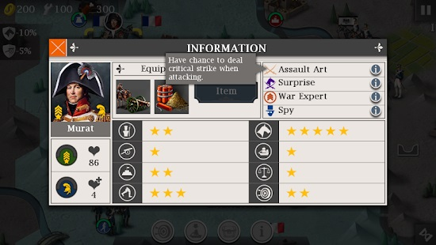
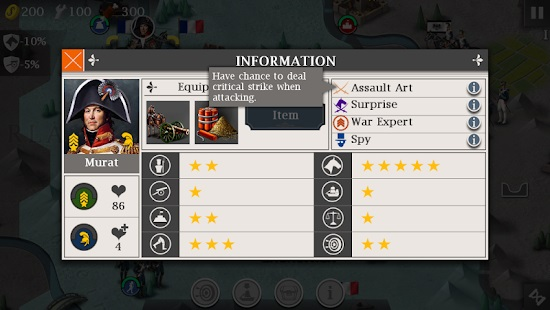

Sun Never Sets (1775-1814)
- Save the Colony
- Indian's Blood
- Suppress Revolution
- Battle of the Nile
- Anglo-Spanish War
- Trade Blockade
- Hammer and Anvil
- Mediterranean War
- Black Sea Breakout*
- Final Battle
Assign Golitsyn to the heavy cavalry in the southwest and Issabella to a heavy artillery, Oudinot to light infantry in Kingston and Lan to the guards cavalry next to him. The army in the south should take New York by rounds 6-9 and if you have problems in the north, they can reinforce. Don't get too close to Cornplanter since he can move 3 tiles and will always attack your troop, if in range. The French land around round 6 and by that time you can ignore them. Don't rush to the harbour at the beginning, all the money you have use it to buy light artillery north of the harbour.
Assign Golitsyn to the light cavalry to go take out Washington. If he is maxed out, he can take him out without help. You don't need to use the ships at all because the French navy is much stronger. Use the rest of your troops to push with Clinton, but don't leave your base unguarded. Your generals should push through the American camp in the south and move to attack Cornplanter. After he is killed, you'll have more than enough time to occupy New Orleans. You can clear out Jourdan and his troops on the way.
It helps to conquer the southeast first and send your 2 ships with 1 unit to the small island then head all the way up to Paris until you control the entire western battlefield, from there you have to get the last city which will be very easy to conquer by then. The Prussians will be done very quick as well as the Austrians but most of the enemy generals will be killed, secure the southeast with your ships and catch the towns with the unit you put on the island at the beginning.
Wipe out Napoleon first. Do this by surrounding the ship of Napoleon and destroy it. Ignore the other French ships to the south, they can be outranged at the end. Use your fleet to go to Cairo. Surround and destroy the ships with 2 range, while outranging the ones with a range of 1, don't be afraid to use medikits in order to make sure Nelson survives. After you've destroyed the enemy ships capture the harbour. Destroy the remaining French ships using outranging tactics.
Assign all of your generals to the ships, including non-navy generals. Split your army into 2 groups, 3 of them should go southwards, its advised to assign 2 generals to those ships with the other one being Nelson as this is the harder front. Western front: surround the ships before attacking, this will greatly decrease the damage of the hostile ships. Outrange the small Spanish ship. After that destroy them all, including non-targets. Ignore the French ships and go straight to the harbour. When attacking the harbour, make sure the coastal forts can't hit your ships and wipe them out with all the remaining ships. Eastern front: stay fully to the east so the coastal forts can't hit you, because of that, you can't surround the hostile ships, so it comes down to pure strength, since you have 3 ships you should emerge victorious.
Take the port right next to you. It has a trading station so you can trade for food. That is where the trading general is needed. Now send everyone to Falsen in the south to capture his port. You might want to recruit some extra ships if you have any money. Capturing Reval and the Swedish port is difficult. Not only will Dobeln harass the ship that's in the port, making it hard to keep control of, but the Russian navy generals are quite powerful. Throw everything you have at them and they should eventually go down.
Send all of your troops except the rocket artillery to be in position to land on turn 2. On turn 3, the Portuguese general should have left Lisbon undefended. Go ahead and take it, and after that, take the stable. Defend with your artillery general against Lasalle and when he is defeated, spawn a double armored car in the stable that you took. You should have a good cavalry general if you are this late in the game, so put him on it to fight Suchet and Massena who will be incoming. After those two are killed, have him reclaim Seville. To get the north objective back, send either an infantry general with the rocket artillery, or send a cavalry general by himself. Meanwhile, your artillery general and Wellesley push through the center to attack Madrid. Moreau will be in your way but surrounding him will reduce his damage, making it easy to kill him. Have all of your generals meet up at Madrid to capture it. If Napoleon is in the north, have your infantry/cavalry general stall him.
At the start, concentrate on taking the trade port at Catania. Remember to flank to increase damage. Try to stay clear of the artillery and coastal forts. Don't bother firing on Ferdinandol who is held up at Palermo. Concentrate on the primary targets. After taking Catania, spilt your troops into two battlegroups. Three ships will advance south towards Tripol to take out the enemy ship (Karamanli) there before moving towards Athens to take out the other battleship. After killing Karamanli, you should use healing tents on your way to Athens. The other battlegroup should also have three battleships. Stay around the narrow channel north of Catania. Don't stray towards Tunisia. Bouvet and the French frigate will rush towards you. The Spanish armada of 3 ships led by Gravina will rush at you straight after Bouvet. This is where the two new battleships will come handy. With the two new battleships, you would have a total of 5 battleships here. Put generals on all ships. Send the newer battleships to the front and move the damaged ships away. If the enemies are far away, move the damaged ships into the Catania port to heal or use healing tents. At around round 10-12, the enemy ship (Sebastiani) will move towards your position with two escorts. By now, you should be still fighting with a few enemy ships left. Ignore the rest and rush at Sebastiani. Wait for Sebastiani to come to you first before moving towards him. Flanking is the key here.
Assign all your generals to the ships even if they aren't navy generals. Rapidly, though together, move your ships towards the southwest while not attacking anything. In the middle you should revive Hood with a medium or large medikit. Capture the harbour and let Hood rest there while your other ships are taking down the French ship.
The northern army should land as quickly as possible, and ships take on Brest, occupy any city you can and use it as backup for attacking Paris, while ships take Lehavre. The southern army should occupy the port of Toulon and goes straight to Marseille.


 
